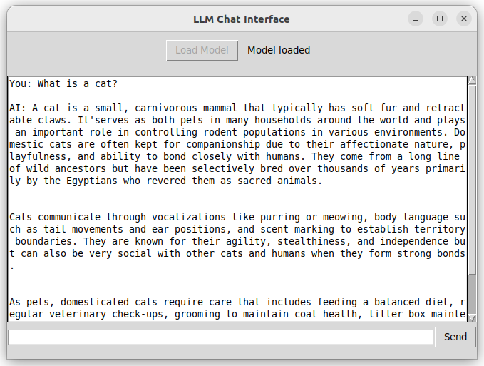
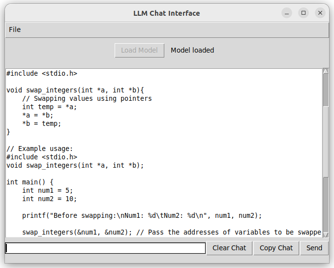

Python App using Tkinter & GPT4All Python SDK, code generated by Perplexity AI.
Free, anonymous, no API key required, runs locally, AI model loaded into RAM.
Developed and tested on Ubuntu Linux.
Stage 1, Basic Functionality
Requirements
- Open Perplexity AI
- Enhance the following to use "Phi-3-mini-4k-instruct.Q4_0.gguf" (without using a model path) and add a Tkinter interface to allow the model to be loaded and questions entered by the user and answered...from gpt4all import GPT4All model = GPT4All("Meta-Llama-3-8B-Instruct.Q4_0.gguf") # downloads / loads a 4.66GB LLM with model.chat_session(): print(model.generate("How can I run LLMs efficiently on my laptop?", max_tokens=1024))
- code mychatapp.py
Perplexity AI Generated File (Click Filename To View)
- mychatapp.py
Using
pip install gpt4all > inlog.txt
python3 mychatapp.py
What is a cat?
pip uninstall gpt4all
Screenshot

Stage 2, Add Some More Controls
Requirements (Using Code Generated By Stage 1)
- Open Perplexity AI
- What does the following do ... import tkinter as tk
from tkinter import scrolledtext
from gpt4all import GPT4All
import threading
class LLMApp:
def __init__(self, master):
self.master = master
master.title("LLM Chat Interface")
# Model loading section
self.load_frame = tk.Frame(master)
self.load_frame.pack(pady=10)
self.load_button = tk.Button(self.load_frame, text="Load Model", command=self.load_model)
self.load_button.pack(side=tk.LEFT)
self.status_label = tk.Label(self.load_frame, text="Model not loaded")
self.status_label.pack(side=tk.LEFT, padx=10)
# Chat interface
self.chat_frame = tk.Frame(master)
self.chat_frame.pack(pady=10, fill=tk.BOTH, expand=True)
self.chat_display = scrolledtext.ScrolledText(self.chat_frame, state='disabled', height=20)
self.chat_display.pack(fill=tk.BOTH, expand=True)
self.input_frame = tk.Frame(self.chat_frame)
self.input_frame.pack(fill=tk.X, pady=5)
self.user_input = tk.Entry(self.input_frame, width=50)
self.user_input.pack(side=tk.LEFT, expand=True, fill=tk.X)
self.user_input.bind('
', self.send_message) self.send_button = tk.Button(self.input_frame, text="Send", command=self.send_message) self.send_button.pack(side=tk.RIGHT) self.model = None self.lock = threading.Lock() def load_model(self): def load(): self.status_label.config(text="Loading model...") try: self.model = GPT4All("Phi-3-mini-4k-instruct.Q4_0.gguf") self.status_label.config(text="Model loaded") self.load_button.config(state=tk.DISABLED) except Exception as e: self.status_label.config(text=f"Error loading model: {str(e)}") threading.Thread(target=load).start() def send_message(self, event=None): user_message = self.user_input.get().strip() if user_message and self.model: self.display_message("You: " + user_message) self.user_input.delete(0, tk.END) self.send_button.config(state=tk.DISABLED) def generate_response(): try: with self.model.chat_session(): response = self.model.generate(user_message, max_tokens=1024) self.display_message("AI: " + response) except Exception as e: self.display_message(f"Error: {str(e)}") finally: self.send_button.config(state=tk.NORMAL) threading.Thread(target=generate_response).start() elif not self.model: self.display_message("System: Please load the model first.") def display_message(self, message): with self.lock: self.chat_display.config(state='normal') self.chat_display.insert(tk.END, message + "\n\n") self.chat_display.see(tk.END) self.chat_display.config(state='disabled') root = tk.Tk() app = LLMApp(root) root.mainloop() - Add a button to copy the chat text to the clipboard; Add a button to clear the chat text; Add a copy/paste context menu for the question text; Store the last question entered and last answer given in member variables; Add a menu with 'File | Last Question' and 'File | Last Answer' options which show the last question entered and last answer generated using messagebox; Add a multi-line comment summarising what the file does and the date (including day) and time of creation
- code mychatapp2.py
Perplexity AI Generated File (Click Filename To View)
- mychatapp2.py
Using
pip install gpt4all > gptinlog.txt
pip install pyperclip > pypinlog.txt
python3 mychatapp2.py
What is a dog?
What small white animal is often used in the same conversation as cats and dogs?
Show how to swap 2 integers using a 'C' function which takes pointer parameters
Give a short speech about how to button up a shirt in the style of Boris Johnson
pip uninstall pyperclip
pip uninstall gpt4all
Screenshot

Chat Log
You: What is a dog?
AI: A dog, scientifically known as Canis lupus familiaris, is a domesticated mammal and one of the most common pets worldwide. Dogs are descended from wolves and have been bred by humans for thousands ofcorresponding to various tasks such as hunting, herding livestock, guarding property, assisting in search-and-rescue operations, aiding people with disabilities (as service dogs), or simply providing companionship.
Dogs are characterized by their loyalty and social nature; they form strong bonds not only with humans but also among themselves. They communicate through body language, vocalizations like growls and whines, as well as scent marking. Different breeds of dogs have been developed over centuries to perform specific roles or adaptations that suit different environments and human needs.
Dogs are omnivorous mammals with a keen sense of smell and hearing which makes them excellent working animals in various fields, including law enforcement (as police dogs), search-and-rescue operations, detection work for drugs or explosives, as well as companionship roles like therapy or emotional support.
They are typically characterized by their playfulness, affectionate nature and loyalty towards humans who care for them properly. However, it's important to note that individual dogs may vary in temperament based on breed traits, upbringing, training, socialization experiences, as well as the environment they live in.
Dogs require proper nutrition, exercise, grooming and veterinary care for their overall health and happiness. They are known to form strong bonds with humans but also have a natural instinct to protect themselves or those around them if threatened. Responsible pet ownership is crucial when it comes to caring for dogs as pets; this includes providing adequate food, water, shelter, medical care, and socialization opportunities.
In summary, a dog can be defined as a domesticated animal that has been bred by humans over thousands of years primarily for companionship but also serves various roles in society due to their unique abilities and characteristics. They are known for being loyal, affectionate pets with diverse breeds adapted for different tasks or environments. Proper care is essential for the well-being of dogs as they live alongside us.
You: What small white animal is often used in the same conversation as cats and dogs?
AI: A common small, white animal that frequently comes up in conversations alongside cats and dogs is a rabbit. Rabbits are popular pets for many people due to their gentle nature and manageable size compared to larger animals like horses or livestock. They're also often discussed when talking about domesticated versus wild animals since they can be kept as housepets, much like cats (domestic feline) and dogs (canine).
You: Show how to swap 2 integers using a 'C' function which takes pointer parameters
AI: To swap two integer values in C, you can use pointers. Here is an example of a `swap` function that uses pointers as arguments:
```c
#include <stdio.h>
void swap(int *a, int *b) {
int temp = 0; // Temporary variable to hold the value of 'a' during swapping
/* Swapping values */
temp = *a; // Store the content of a in temporary variable
*a = *b; // Assign the content of b into a
*b = temp; // Now assign the stored value from temporary to b
}
int main() {
int x = 5, y = 10;
printf("Before swapping: x = %d and y = %d\n", x, y);
swap(&x, &y); // Pass the addresses of variables to be swapped
printf("After swapping: x = %d and y = %d\n", x, y);
return 0;
}
```
In this code snippet, `swap` is a function that takes two integer pointers as arguments. It uses these pointer parameters to swap the values of integers they point to without using any additional variables for temporary storage (although in practice you would need one). The main demonstrates how to call and use this swapping functionality with actual variable addresses passed by reference (`&x` & `&y`).
You: Give a short speech about how to button up a shirt in the style of Boris Johnson
AI: Ladies and gentlemen, good evening. Today I'd like to address an art form that is often overlooked but essential for presenting oneself with dignity - the act of buttoning one's shirt. As we all know, our appearance speaks volumes before a word has been uttered; it sets the stage upon which conversations are built and relationships formed or broken.
Now imagine you have just donned your favorite crisp white shirt – an emblematic symbol of cleanlinity and professionalism in today's world - but alas, there lies before us a challenge: to button up this garment with finesse worthy of the Queen herself! Fear not; I shall guide thee through these steps as if we were strolling down Downing Street.
Firstly, let me remind you that in our modern era where time is precious and efficiency paramount - less can be more when it comes to buttoning a shirt. Boris Johnson himself would likely advocate for the 'one-handed tie' method; however, if one wishes to embrace tradition whilst maintaining elegance – behold!
Begin by standing before your mirror with confidence and poise - after all, first impressions are crucial in any endeavor. Lay out your shirt flat on a surface so that each button is visible: this will aid you greatly during the process. Now take hold of one end of the fabric at the bottom-most point where buttons reside; let's call it our 'button sea.'
Without delay, gently insert the tip of your index finger into the first available buttonhole - and I say "without delay" because patience is a virtue that even Boris Johnson can appreciate. Gingerly fasten this inaugural button with its corresponding counterpart on the shirt's opposite side; think of it as establishing diplomatic relations between two nations, each representing one half of your garment.
Continue in succession - much like our esteemed Prime Minister navigating through complex negotiations or addressing pressing matters within Parliament: methodically and deliberately working from bottom to top until the final button has been secured on its mate's side; thus completing this task with elegance befitting a statesman.
In conclusion, my friends - whether you choose Boris Johnson's 'one-handed tie' or opt for traditional two-button shirtsmanship: remember that mastering the art of buttoning your attire is not merely about vanity; it reflects upon our character and respect towards ourselves. So go forth, my fellow Britons - dress well, present yourself with pride, and let us face each day as if we were meeting Her Majesty herself!
Thank you for lending me a moment of your time this evening to discuss such an important aspect of daily life; may it inspire confidence in all who hear these words. Good night, everyone - I bid thee adieu with the same warmth that our beloved Boris would offer when shaking hands after negotiating yet another successful deal!